基本问题
1. 封装成帧
将网络层传下来的分组添加首部和尾部，用于标记帧的开始和结束。
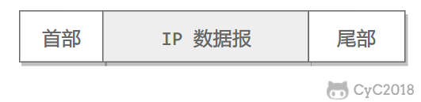
2. 透明传输
透明表示一个实际存在的事物看起来好像不存在一样。
帧使用首部和尾部进行定界，如果帧的数据部分含有和首部尾部相同的内容，那么帧的开始和结束位置就会被错误的判定。需要在数据部分出现首部尾部相同的内容前面插入转义字符。如果数据部分出现转义字符，那么就在转义字符前面再加个转义字符。在接收端进行处理之后可以还原出原始数据。这个过程透明传输的内容是转义字符，用户察觉不到转义字符的存在。
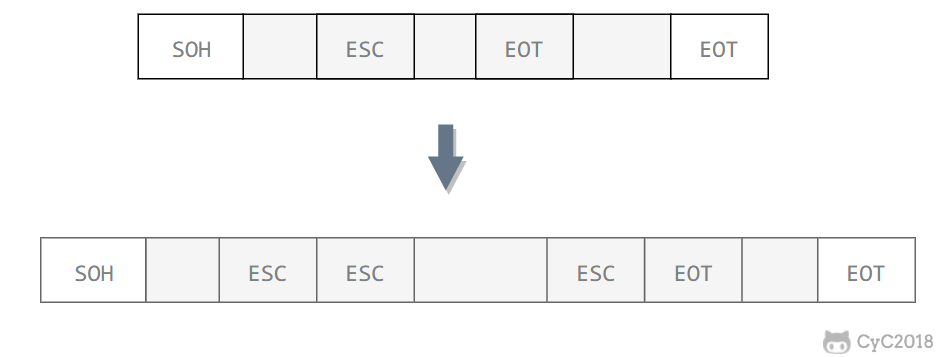
3. 差错检测
目前数据链路层广泛使用了循环冗余检验（CRC）来检查比特差错。
信道分类
1. 广播信道
一对多通信，一个节点发送的数据能够被广播信道上所有的节点接收到。
所有的节点都在同一个广播信道上发送数据，因此需要有专门的控制方法进行协调，避免发生冲突（冲突也叫碰撞）。
主要有两种控制方法进行协调，一个是使用信道复用技术，一是使用 CSMA/CD 协议。
2. 点对点信道
一对一通信。
因为不会发生碰撞，因此也比较简单，使用 PPP 协议进行控制。
信道复用技术
1. 频分复用
频分复用的所有主机在相同的时间占用不同的频率带宽资源。
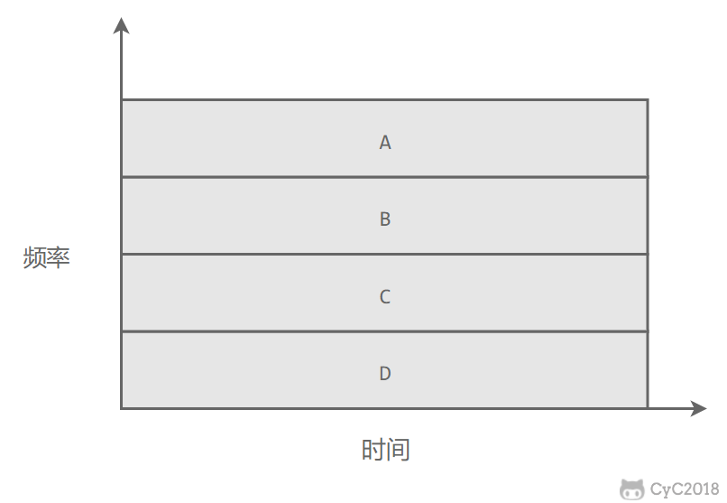
2. 时分复用
时分复用的所有主机在不同的时间占用相同的频率带宽资源。
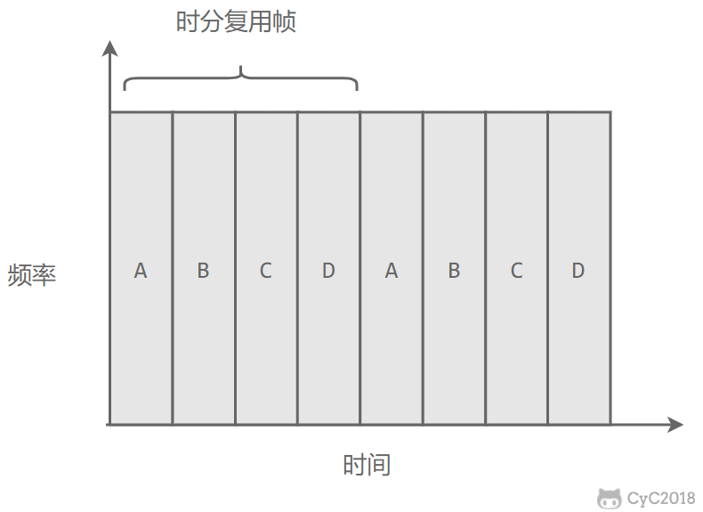
使用频分复用和时分复用进行通信，在通信的过程中主机会一直占用一部分信道资源。但是由于计算机数据的突发性质，通信过程没必要一直占用信道资源而不让出给其它用户使用，因此这两种方式对信道的利用率都不高。
3. 统计时分复用
是对时分复用的一种改进，不固定每个用户在时分复用帧中的位置，只要有数据就集中起来组成统计时分复用帧然后发送。
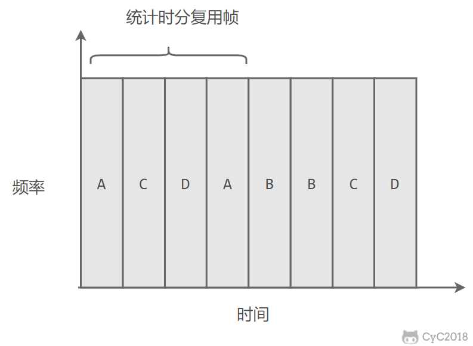
4. 波分复用
光的频分复用。由于光的频率很高，因此习惯上用波长而不是频率来表示所使用的光载波。
5. 码分复用
为每个用户分配 m bit 的码片，并且所有的码片正交，对于任意两个码片 和
有
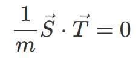
为了讨论方便，取 m=8，设码片 为 00011011。在拥有该码片的用户发送比特 1 时就发送该码片，发送比特 0 时就发送该码片的反码 11100100。
在计算时将 00011011 记作 (-1 -1 -1 +1 +1 -1 +1 +1)，可以得到
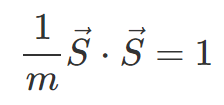
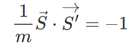
其中 为
的反码。
利用上面的式子我们知道，当接收端使用码片 对接收到的数据进行内积运算时，结果为 0 的是其它用户发送的数据，结果为 1 的是用户发送的比特 1，结果为 -1 的是用户发送的比特 0。
码分复用需要发送的数据量为原先的 m 倍。
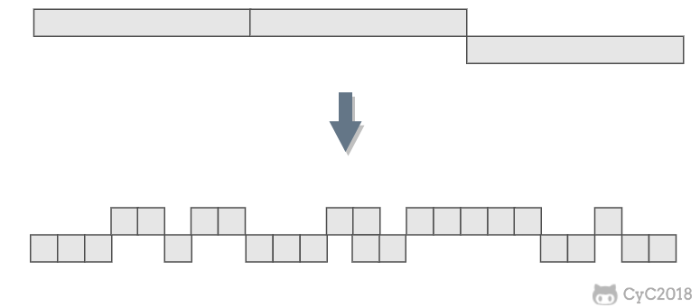
CSMA/CD 协议
CSMA/CD 表示载波监听多点接入 / 碰撞检测。
- 多点接入 ：说明这是总线型网络，许多主机以多点的方式连接到总线上。
- 载波监听 ：每个主机都必须不停地监听信道。在发送前，如果监听到信道正在使用，就必须等待。
- 碰撞检测 ：在发送中，如果监听到信道已有其它主机正在发送数据，就表示发生了碰撞。虽然每个主机在发送数据之前都已经监听到信道为空闲，但是由于电磁波的传播时延的存在，还是有可能会发生碰撞。
记端到端的传播时延为 τ，最先发送的站点最多经过 2τ 就可以知道是否发生了碰撞，称 2τ 为 争用期 。只有经过争用期之后还没有检测到碰撞，才能肯定这次发送不会发生碰撞。
当发生碰撞时，站点要停止发送，等待一段时间再发送。这个时间采用 截断二进制指数退避算法 来确定。从离散的整数集合 {0, 1, .., (2k-1)} 中随机取出一个数，记作 r，然后取 r 倍的争用期作为重传等待时间。
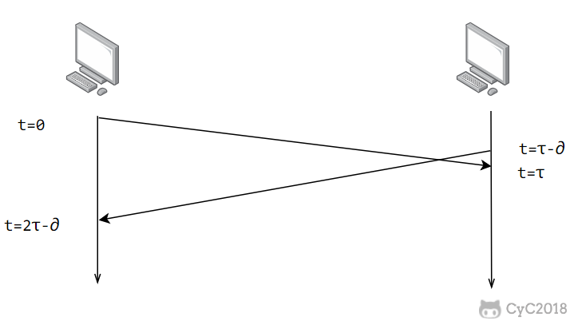
PPP 协议
互联网用户通常需要连接到某个 ISP 之后才能接入到互联网，PPP 协议是用户计算机和 ISP 进行通信时所使用的数据链路层协议。
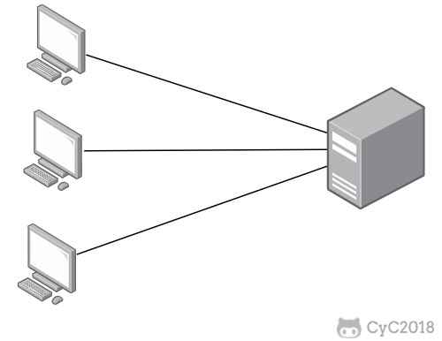
PPP 的帧格式：
- F 字段为帧的定界符
- A 和 C 字段暂时没有意义
- FCS 字段是使用 CRC 的检验序列
- 信息部分的长度不超过 1500
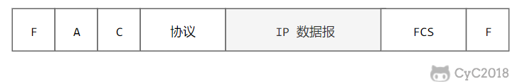
MAC 地址
MAC 地址是链路层地址，长度为 6 字节（48 位），用于唯一标识网络适配器（网卡）。
一台主机拥有多少个网络适配器就有多少个 MAC 地址。例如笔记本电脑普遍存在无线网络适配器和有线网络适配器，因此就有两个 MAC 地址。
局域网
局域网是一种典型的广播信道，主要特点是网络为一个单位所拥有，且地理范围和站点数目均有限。
主要有以太网、令牌环网、FDDI 和 ATM 等局域网技术，目前以太网占领着有线局域网市场。
可以按照网络拓扑结构对局域网进行分类：
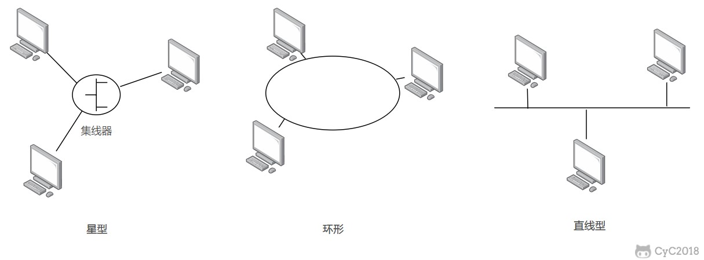
以太网
以太网是一种星型拓扑结构局域网。
早期使用集线器进行连接，集线器是一种物理层设备， 作用于比特而不是帧，当一个比特到达接口时，集线器重新生成这个比特，并将其能量强度放大，从而扩大网络的传输距离，之后再将这个比特发送到其它所有接口。如果集线器同时收到两个不同接口的帧，那么就发生了碰撞。
目前以太网使用交换机替代了集线器，交换机是一种链路层设备，它不会发生碰撞，能根据 MAC 地址进行存储转发。
以太网帧格式：
- 类型 ：标记上层使用的协议；
- 数据 ：长度在 46-1500 之间，如果太小则需要填充；
- FCS ：帧检验序列，使用的是 CRC 检验方法；
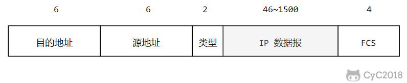
交换机
交换机具有自学习能力，学习的是交换表的内容，交换表中存储着 MAC 地址到接口的映射。
正是由于这种自学习能力，因此交换机是一种即插即用设备，不需要网络管理员手动配置交换表内容。
下图中，交换机有 4 个接口，主机 A 向主机 B 发送数据帧时，交换机把主机 A 到接口 1 的映射写入交换表中。为了发送数据帧到 B，先查交换表，此时没有主机 B 的表项，那么主机 A 就发送广播帧，主机 C 和主机 D 会丢弃该帧，主机 B 回应该帧向主机 A 发送数据包时，交换机查找交换表得到主机 A 映射的接口为 1，就发送数据帧到接口 1，同时交换机添加主机 B 到接口 2 的映射。
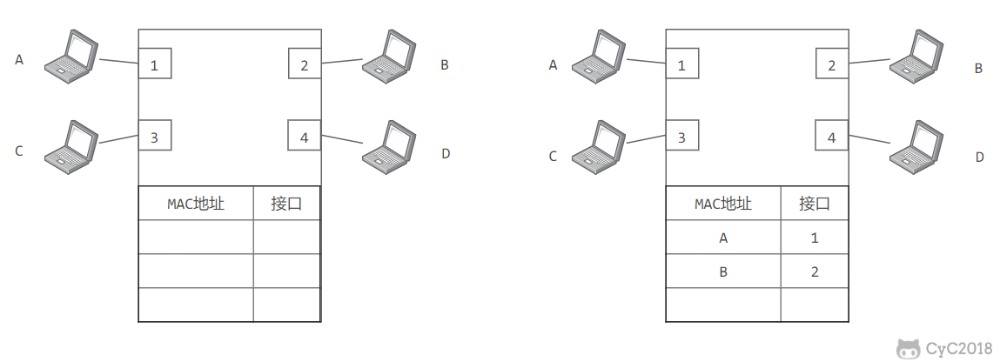
虚拟局域网
虚拟局域网可以建立与物理位置无关的逻辑组，只有在同一个虚拟局域网中的成员才会收到链路层广播信息。
例如下图中 (A1, A2, A3, A4) 属于一个虚拟局域网，A1 发送的广播会被 A2、A3、A4 收到，而其它站点收不到。
使用 VLAN 干线连接来建立虚拟局域网，每台交换机上的一个特殊接口被设置为干线接口，以互连 VLAN 交换机。IEEE 定义了一种扩展的以太网帧格式 802.1Q，它在标准以太网帧上加进了 4 字节首部 VLAN 标签，用于表示该帧属于哪一个虚拟局域网。
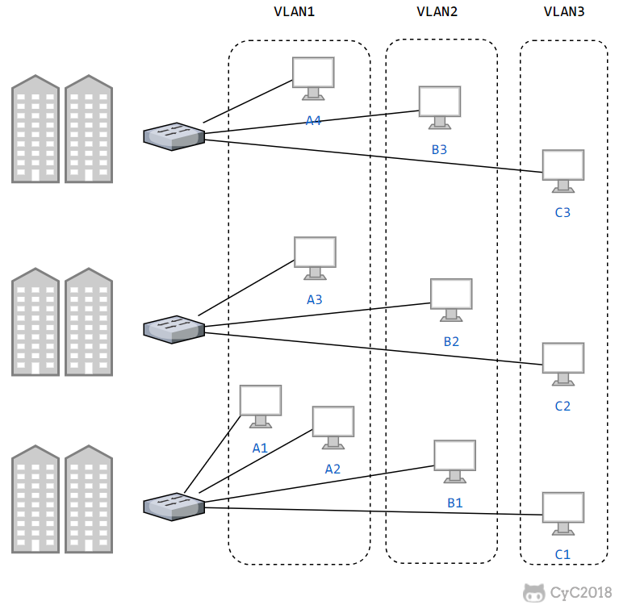
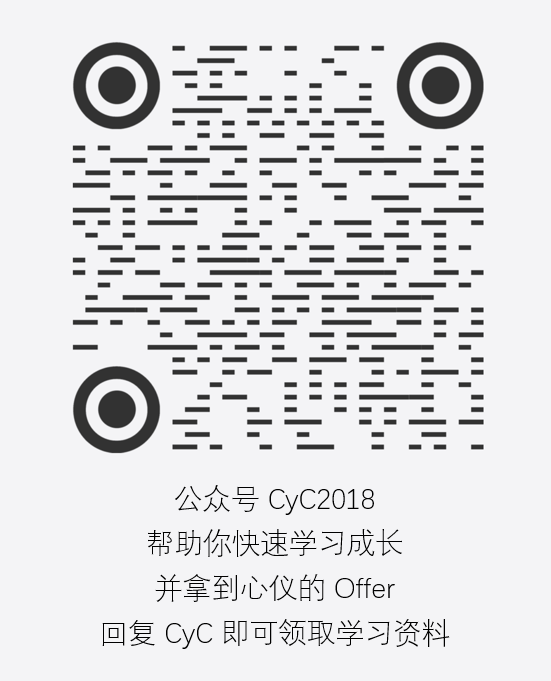
![]()